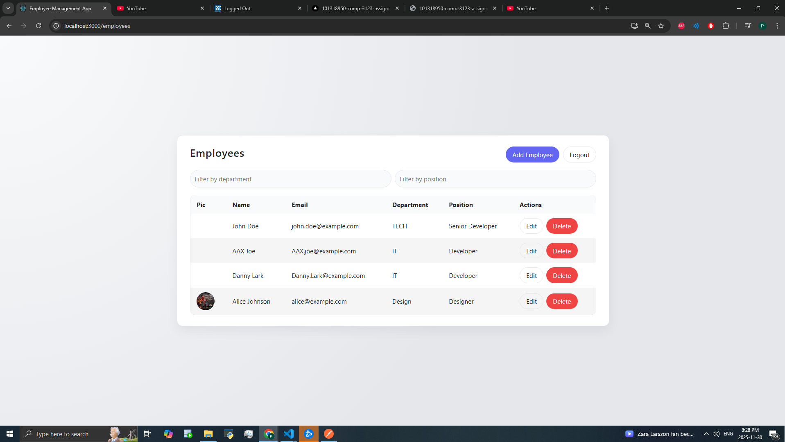
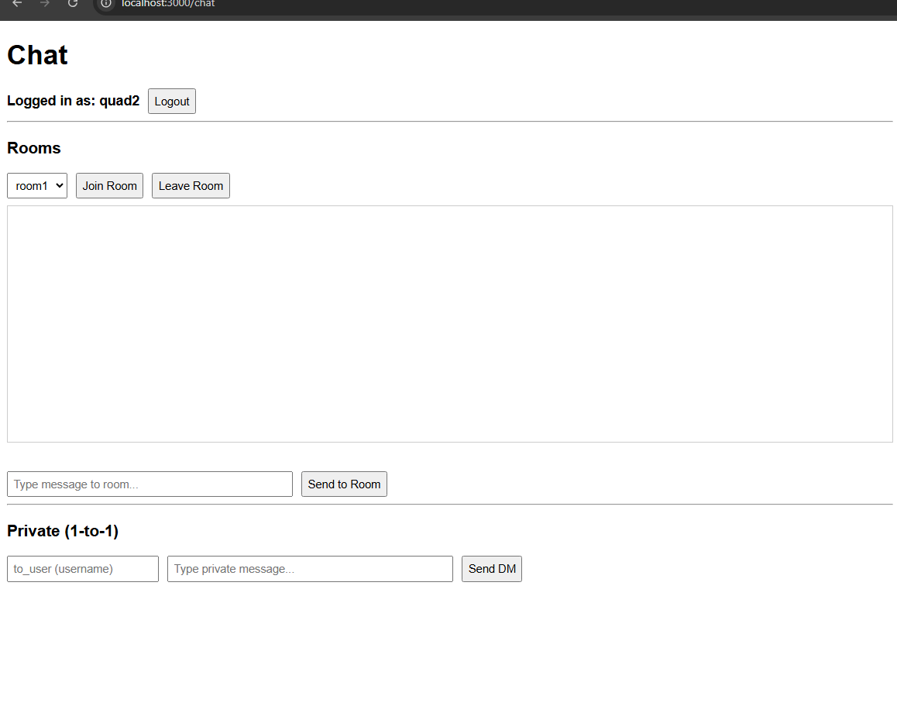
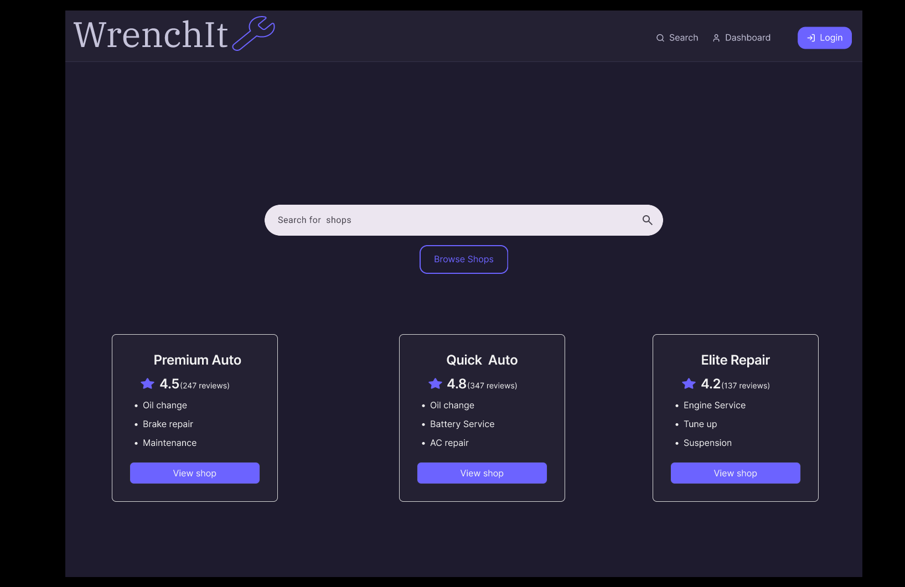

Personal Data
Hello, my name is Fredrich Tan. I am a Computer Programming and Analysis student with academic experience in software development, backend systems, databases, mobile application development, and software design. Through my coursework and project work, I have developed practical technical skills along with a growing interest in business systems analysis, problem-solving, and designing solutions that connect user needs with technology.
This portfolio was created to present my academic background, technical projects, and capstone experience. It reflects the work I have completed throughout my studies and highlights my continued growth as an aspiring software developer.
- Name: Fredrich Tan
- Program: Computer Programming & Analysis
- GitHub: Cloudtemplar2615
Academic Credentials
- Institution: George Brown College, Toronto
- Program: Computer Programming and Analysis
- Status: Current Student
- Expected Completion: 2026
- Academic Record / Transcript: Available upon request
Technical Skills
Programming Languages
Java, JavaScript, Python, C#, SQL
Web Development
HTML, CSS, React, Node.js, Express, GraphQL
Databases
MongoDB, MySQL, PostgreSQL, Oracle
Mobile / Tools
Swift, Android tools, Git, GitHub, VS Code, Docker
Academic Work Experience
1. Employee Management System Backend
This project focused on building the backend of an employee management system using modern web development tools. It involved designing application logic, handling employee-related data, and supporting core operations such as creating, updating, retrieving, and deleting records.
Through this project, I strengthened my understanding of backend development, API structure, authentication concepts, and database integration in a practical academic setting.
Tech: Node.js, Express, GraphQL, MongoDB, JWT
View Project2. Employee Management System Frontend
This project focused on the frontend development of an employee management application. It included building user interface components, organizing page structure, and supporting features such as authentication views, form handling, and employee-related operations.
It helped me improve my skills in frontend design, component-based development, and connecting user-facing features with application logic.
Tech: React, JavaScript, CSS

View Project3. Mobile Development Project
This mobile development project allowed me to apply user interface design, screen navigation, and mobile-focused functionality in an app environment. The project emphasized usability, structured app flow, and practical feature implementation.
It strengthened my understanding of mobile application structure and how to design software with a user-centered approach.
Tech: Swift, Mobile Development
View Project4. Chat Application
This project involved creating a web-based chat application with interactive functionality and application routing. It helped demonstrate how a web application can be structured to support dynamic communication features.
Through this work, I gained more experience with application flow, interface organization, and building practical browser-based software.
Tech: Node.js, Express, JavaScript

View Project5. Java Backend / Microservices Work
This project reflects my exposure to Java backend development and service-based software design. It involved working with backend concepts, application structure, and technologies used in larger distributed systems.
It helped expand my experience beyond JavaScript-based development and gave me additional practice with backend engineering tools and workflows.
Tech: Java, Spring Boot, Docker
View ProjectCapstone Project - WrenchIt
WrenchIt is a capstone project focused on creating a platform related to automotive service and repair support. The project was developed as a team-based academic initiative and involved planning, collaboration, interface design, and implementation thinking.

Project Summary
The project focuses on building a solution that improves the way users interact with automotive service and repair-related needs through a structured digital platform.
Project Vision
The vision of WrenchIt is to create a useful and accessible platform that supports users in finding, organizing, and interacting with automotive service solutions more efficiently.
Project / Business Requirements
The project required identifying user needs, planning core features, organizing system flow, and defining the purpose and structure of the solution.
Project Plan
The capstone followed a phased academic project process involving planning, feature discussion, team coordination, and progress tracking over time.
Requirements Analysis and Design
The project included analysis of system needs, design planning, interface structure, and discussion of how the application should function for users.
Wireframes / Mockups
Wireframes and interface planning were part of the capstone process to support the design and structure of the user experience.
Status Reports
Project progress was supported through team updates, development discussion, and ongoing academic reporting throughout the capstone process.
System Implementation
The implementation stage focused on applying technical ideas, supporting development, and contributing to the overall system direction of the capstone project.
Philosophy/Statement of Career Goal
My goal is to build a career as a Business Systems Analyst by combining technical knowledge with problem-solving, communication, and systems thinking. I am interested in understanding business needs, analyzing requirements, and helping design solutions that improve processes and support users effectively.
Through my academic work in programming, databases, web applications, and project development, I have built a strong technical foundation that helps me understand how systems are designed and implemented. I want to continue growing in roles where I can bridge the gap between business needs and technical solutions while contributing to projects in a structured and meaningful way.
Contact
If you would like to view more of my work, please use the links below.
- Name: Fredrich Tan
- GitHub: github.com/Cloudtemplar2615
- Capstone Repository: WrenchIt